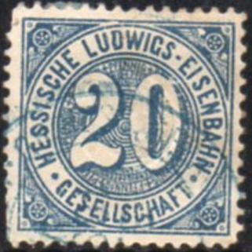
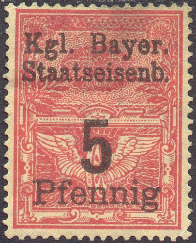
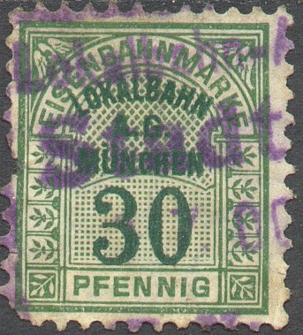
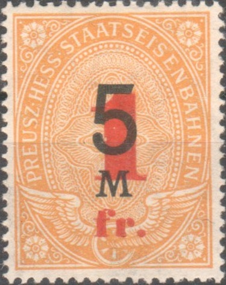
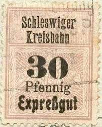
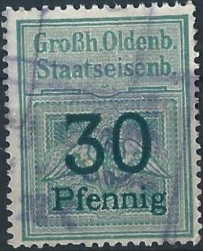
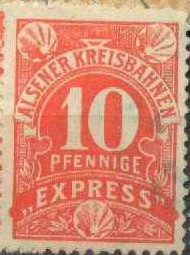

{kind=link}

Hessische Ludwigs Eisenbahn Gesellschaft 20 p red and 20 p blue.
Return To Catalogue - Germany railway stamps, part 2 - Germany Overview
Note: on my website many of the
pictures can not be seen! They are of course present in the
catalogue;
contact me if you want to purchase it.
Many railway stamps exist in Germany. I will present the ones I have seen here, others exist. The book by F.Jünke 'Die deutschen Eisenbahnmarken' has a lot of information concerning these stamps. According to this book, the first railway stamps appeared in 1876 and the last ones towards 1945. The first railway stamps were issued by the Hessische Ludwigs Eisenbahn Gesellschaft. I've seen a lot of uncancelled stamps, mainly of the smaller railways, they might have been issued for collectors purposes only?

Hessische Ludwigs Eisenbahn Gesellschaft 20 p red and 20 p blue.
"KGL. PREUSS. EISENBAHNDIRECTION FRANKFURT A.M", 20 p
blue, a similar design with "MAINZ" also exists.
('KGL. PREUSS. U. GROSSH. HESS STAATSEISENBAHNEN')

"Grobh Badische
Staatseisenb", click also here
for more of these stamps. The word "Grobh"
was barred in 1919.
"GR. BAD. STAATSEISENBAHN EXPRESSGUT"
With the above inscription "GR. BAD. STAATSEISENBAHN EXPRESSGUT": I've seen the values: 5 p brown, 10 p black, 25 p blue, 30 p green and 50 p red. And with value in "CENTIMES" (for use in the Badischer Bahnhof in Basel, Switzerland): 5 c green, 10 c green, 30 c green, 65 c green, 1 Frank green, 5 Franken green. They should also exist with the inscription "REICHSEISENBAHNEN" and value in "RAPPEN" when the Baden Railways were taken over by the German Reichsbahn, although I haven't seen them..
Inscription "BADISCHE STAATSEISENBAHNEN WERTMARKE". I
have seen the values 5p, 10 p and 20 p (all in red with black
value inscription).

"WURTTEMBERG STAATSBAHNEN"
More railway stamps of Wurttemberg can be found here.

"Kgl. Bayer. Staatseisenb." and "Bayer.
Staateisenb.".(Bavaria)
More railway stamps of Bavaria can be found here.

('EISENBAHNMARKE LOKALBAHN A.G. MUNCHEN')
In the above design ("LOKALBAHN A.G. MUNCHEN") I have also seen 5 p red, 20 p blue, 40 p orange (red inscription) and 50 p lilac (violet inscription), 60 p blue, 70 p lilac, 100 p grey(?) and green, 200 p yellow and green.
"LOKALBAHN TROSSINGEN"; I've also seen 5 p red
"JAGSTTAL BAHN"
In the above "JAGSTTAL BAHN" design , I've also seen a 30 p green and a 60 p grey (with blue inscription).
"HOHENZOLL LANDESBAHN"
"WURTT. NEBENB. A.G." and "FILDER-BAHN"
(another railway in Wurttemberg)
In the "FILDER-BAHN" design I have seen: 10 p red, 20 p blue, 30 p green, 40 p orange, 50 p violet, 60 p blue, 70 p dark brown, 90 p olive, 100 p grey, 200 p yellow and black, 400 p light brown
"WURTT EISENBAHN- GESELLSCHAFT"
In the above "WURTT. EISENBAHN- GESELLSCHAFT" design I have seen the values: 10 p red, 25 p yellow (brown inscription), 30 p green, 40 p red, 60 p blue, 70 p brown (inscription different shade of brown), 100 p grey, 500 p green. More railway stamps of Wurttemberg can be found here.
"ST. STRASSENBAHN FRANKFURT A.M.", (1907?)
Bahnen der Stadt Coln; 5 M brown.

"KGL PREUSS STAATSEISENBAHNEN"; I have also seen the
values 1 p orange, 5 p red, 30 p green, 40 p orange, 50 p lilac
and 90 p light brown.
 
"PREUSZ. HESS. STAATSEISENBAHNEN", also with overprint
"Privatbahn" and surcharged in "cts." or
"fr" to be used in Saar and with
overprint "Expressgut" and "C.G.H.S."
overprint for Upper Silesia.
1897: Railway stamps with inscription "PREUSZ.
HESS. STAATSEISENBAHNEN", I have seen the values: 5
p red, 10 p grey, 20 p orange, 25 p green, 30 p green, 40 p
orange, 50 p lilac, 60 p blue, 70 p brown, 80 p yellow, 90 p
brown, 1 M grey, 2 M green, 3 M blue (value black), 4 M brown
(value black), 5 M yellow (value red), 5 M yellow (value black),
10 M brown and black.
Furthermore I have seen the 40 p orange and 5 M orange with
overprint "Privatbahn" (=private
railway). I've also seen a 5 p red, a 25 p green and a 40 p
orange with slanting overprint 'Expreßgut'.
These stamps also exist with overprint "C.G.H.S."
(to be used in Upper Silesia): 5 p red,
10 p grey, 20 p brown, 30 p green, 40 p orange, 50 p lilac, 60 p
blue, 70 p brown, 80 p orange, 90 p lightbrown, 1 M grey, 2 M
green, 3 M blue, 4 M brown, 5 M orange and 10 M olive.
They also exist with overprint in 'cts.' or 'fr.'
to be used in the Saar district.
"Konigl. Preuss Militar Eisenbahn"; military railway
between Berlin and Juterbog.

In the above 'Schleswiger Kreisbahn' design I have seen (all with overprint 'Expreßgut' and value and text in black): 10 p red, 20 p green and 30 p lilac.

"Oldenburgische Staats- Eisenbahnen" and "Grossh.
Oldenb. Staatseisenb."
"CENTRALVERWALTUNG FUR SEKUNDARBAHNEN HERMMAN BACHSTEIN
BERLIN"
('FILDERBAHN', image of a train climbing a mountain)

'SCHLESWIG ANGLER EISENBAHN', images obtained thanks to Jim
Leonard.
'Schleswig Angler Eisenbahn'. Exists in 10 pf red, 20 pf blue, 50 pf brown, 80 pf green, 1 Mk blue, 3 Mk orange on blue, 5 Mk green on red and 10 Mk brown on blue. The value is indicated in 'PFENNIGE' or 'MARK'. I have also seen another smaller design (50 p only, but other values might exist):
Image obtained thanks to Jim Leonard.
I have furthermore seen: Kleinbahn Kiel-Segeberg, Kleinbahn Kiel-Schonberg, Kiel-Schonberger Eisenbahn, Kreisbahn Eckernford-Kapp, Liegnitz-Rawitzer Eisenbahn and Ratzeburger Kleinbahn.
'FELDEISENBAHN 1944'
Germany railway stamps, part 2
{kind=link}
{kind=link}
{kind=link}
{kind=link}